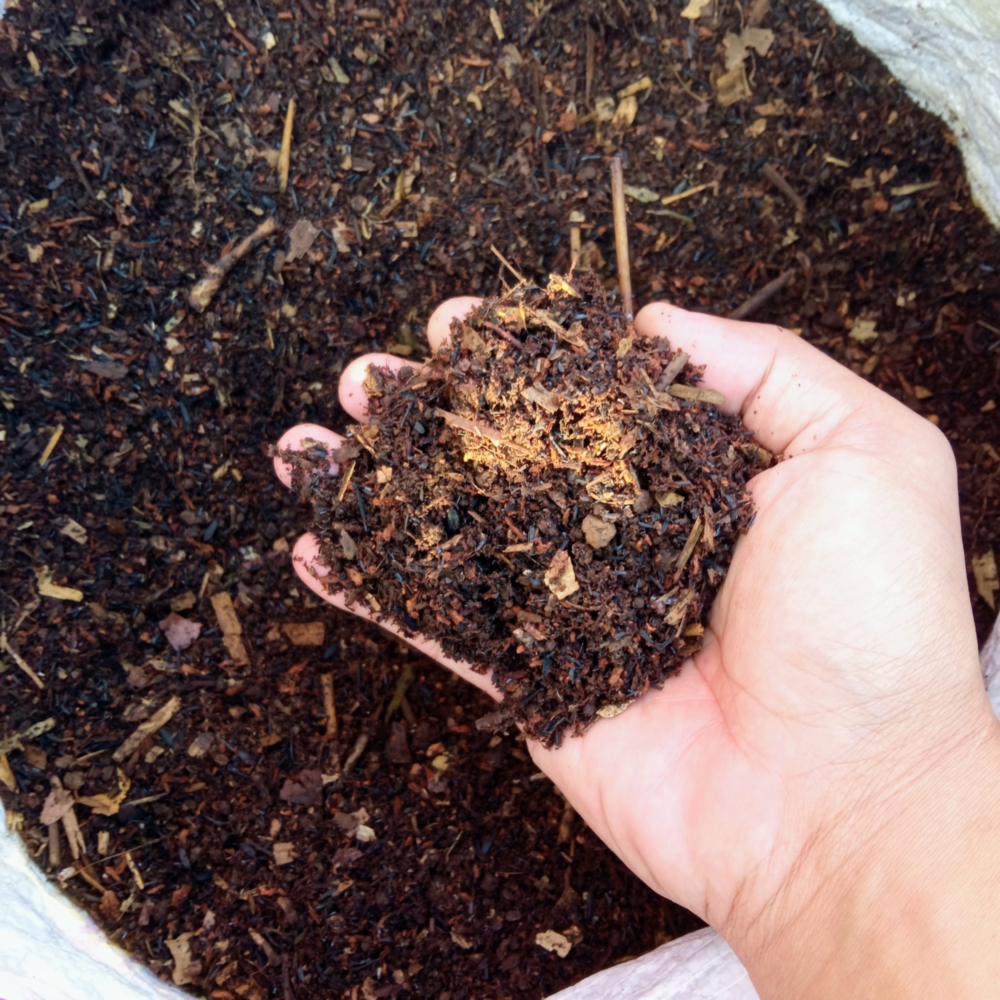
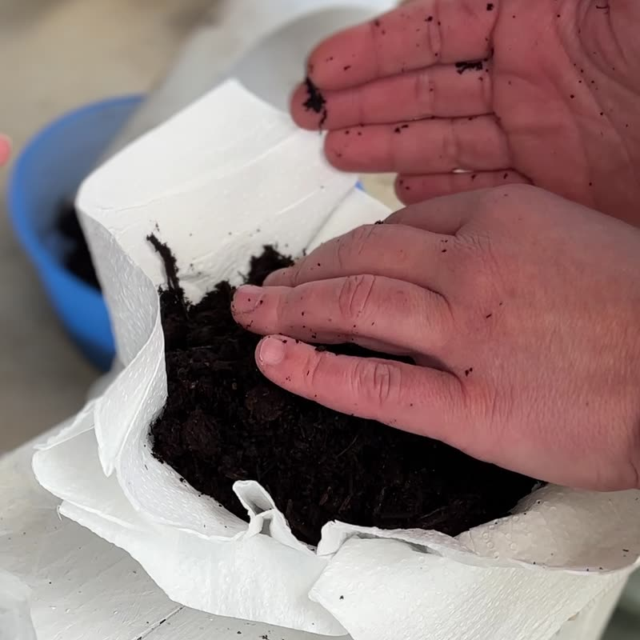

COMPOST
TEAS CONTROL
CONTROLField notes2026 season
Everything one season did, including the letdowns.
Compost
46%organic matter
35 ozsquash
Middlesquash bugs
Teas and extracts
1%organic matter
30 ozsquash
Fewestsquash bugs
Control, water only
14%organic matter
19 ozsquash
Mostsquash bugs
What the season did to all three
- Hail killed the first planting.
- Rodents took the second.
- Johnson grass ran the beds by June.
Sandra NiggemeyerVan, Texas
Her field trial report, 2026.